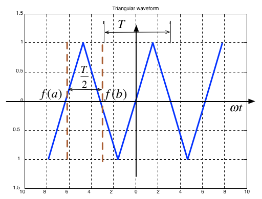

Trigonometric Fourier Series¶
Any periodic waveform can be approximated by a DC component (which may be 0) and the sum of the fundamental and harmomic sinusoidal waveforms. This has important applications in many applications of electronics but is particularly crucial for signal processing and communications.
Colophon¶
An annotatable worksheet for this presentation is available as Worksheet 9.
The source code for this page is content/fourier_series/1/trig_fseries.ipynb.
You can view the notes for this presentation as a webpage (HTML).
This page is downloadable as a PDF file.
Revision?¶
I believe that this subject has been covered in EG-150 Signals and Systems and so we present the notes as background for the Fourier transform.
Agenda¶
Motivating examples
Wave analysis and the Trig. Fourier Series
Symmetry in Trigonometric Fourier Series
Computing coefficients of Trig. Fourier Series in MATLAB
Gibbs Phenomenon
Motivating Examples¶
This Fourier Series demo, developed by Members of the Center for Signal and Image Processing (CSIP) at the School of Electrical and Computer Engineering at the Georgia Institute of Technology, shows how periodic signals can be synthesised by a sum of sinusoidal signals.
It is here used as a motivational example in our introduction to Fourier Series. (See also Fourier Series from Wolfram MathWorld referenced in the Quick Reference on Blackboard.)
To install this example, download the zip file and unpack it somewhere on your MATLAB path.
Wave Analysis¶
Jean Baptiste Joseph Fourier (21 March 1768 – 16 May 1830) discovered that any periodic signal could be represented as a series of harmonically related sinusoids.
An harmonic is a frequency whose value is an integer multiple of some fundamental frequency
For example, the frequencies 2 MHz, 3 Mhz, 4 MHz are the second, third and fourth harmonics of a sinusoid with fundamental frequency 1 Mhz.
The Trigonometric Fourier Series¶
Any periodic waveform \(f(t)\) can be represented as
or equivalently (if more confusingly)
where \(\Omega_0\) rad/s is the fundamental frequency.
Notation¶
The first term \(a_o/2\) is a constant and represents the DC (average) component of the signal \(f(t)\)
The terms with coefficients \(a_1\) and \(b_1\) together represent the fundamental frequency component of \(f(t)\) at frequency \(\Omega_0\).
The terms with coefficients \(a_2\) and \(b_2\) together represent the second harmonic frequency component of \(f(t)\) at frequency \(2\Omega_0\).
And so on.
Since any periodic function \(f(t)\) can be expressed as a Fourier series, it follows that the sum of the DC, fundamental, second harmonic and so on must produce the waveform \(f(t)\).
Sums of sinusoids¶
In general, the sum of two or more sinusoids does not produce a sinusoid as shown below.

To generate this picture use fourier_series1.m.
Evaluation of the Fourier series coefficients¶
The coefficients are obtained from the following expressions (valid for any periodic waveform with fundamental frequency \(\Omega_0\) so long as we integrate over one period \(0\to T_0\) where \(T_0 = 2\pi/\Omega_0\)), and \(\theta = \Omega_0 t\):
Odd, Even and Half-wave Symmetry¶
Odd and even symmetry¶
An odd function is one for which \(f(t) = -f(-t)\). The function \(\sin t\) is an odd function.
An even function is one for which \(f(t) = f(-t)\). The function \(\cos t\) is an even function.
Half-wave symmetry¶
A periodic function with period \(T\) is a function for which \(f(t) = f(t + T)\)
A periodic function with period \(T\), has half-wave symmetry if \(f(t) = -f(t + T/2)\)
Symmetry in Trigonometric Fourier Series¶
There are simplifications we can make if the original periodic properties has certain properties:
If \(f(t)\) is odd, \(a_0=0\) and there will be no cosine terms so \({a_n} = 0\; \forall n > 0\)
If \(f(t)\) is even, there will be no sine terms and \({b_n} = 0\; \forall n > 0\). The DC may or may not be zero.
If \(f(t)\) has half-wave symmetry only the odd harmonics will be present. That is \(a_n\) and \(b_n\) is zero for all even values of \(n\) (0, 2, 4, …)
Symmetry in Common Waveforms¶
To reproduce the following waveforms (without annotation) publish the script waves.m.
Squarewave¶

Average value over period \(T\) is …?
It is an odd/evenfunction?
It has/has not half-wave symmetry \(f(t)=-f(t+T/2)\)?
Shifted Squarewave¶

Average value over period \(T\) is …?
It is an odd/even function?
It has/has not half-wave symmetry \(f(t)=-f(t+T/2)\)?
Sawtooth¶

Average value over period \(T\) is …?
It is an odd/even function?
It has/has not half-wave symmetry \(f(t)=-f(t+T/2)\)?
Triangle¶
Average value over period \(T\) is …?
It is an odd/evenfunction?
It has/has not half-wave symmetry \(f(t)=-f(t+T/2)\)?
Symmetry in fundamental, Second and Third Harmonics¶
In the following, \(T/2\) is taken to be the half-period of the fundamental sinewave.
Fundamental¶

Average value over period \(T\) is …?
It is an odd/evenfunction?
It has/has not half-wave symmetry \(f(t)=-f(t+T/2)\)?
Second Harmonic¶

Average value over period \(T\) is …?
It is an odd/even function?
It has/has not half-wave symmetry \(f(t)=-f(t+T/2)\)?
Third Harmonic¶

Average value over period \(T\) is …?
It is an odd/even function?
It has/has not half-wave symmetry \(f(t)=-f(t+T/2)\)?
Some simplifications that result from symmetry¶
The limits of the integrals used to compute the coefficents \(a_n\) and \(b_n\) of the Fourier series are given as \(0\to 2\pi\) which is one period \(T\)
We could also choose to integrate from \(-\pi \to \pi\)
If the function is odd, or even or has half-wave symmetry we can compute \(a_n\) and \(b_n\) by integrating from \(0\to \pi\) and multiplying by 2.
If we have half-wave symmetry we can compute \(a_n\) and \(b_n\) by integrating from \(0\to \pi/2\) and multiplying by 4.
(For more details see page 7-10 of Karris)
Computing coefficients of Trig. Fourier Series in MATLAB¶
As an example let’s take a square wave with amplitude \(\pm A\) and period \(T\).

Solution¶
format compact
clear all
syms t n A pi
n = [1:11];
DC component
half_a0 = 1/(2*pi)*(int(A,t,0,pi)+int(-A,t,pi,2*pi))
half_a0 =
0
Compute harmonics
ai = 1/pi*(int(A*cos(n*t),t,0,pi)+int(-A*cos(n*t),t,pi,2*pi))
bi = 1/pi*(int(A*sin(n*t),t,0,pi)+int(-A*sin(n*t),t,pi,2*pi))
ai =
[ 0, 0, 0, 0, 0, 0, 0, 0, 0, 0, 0]
bi =
[ (4*A)/pi, 0, (4*A)/(3*pi), 0, (4*A)/(5*pi), 0, (4*A)/(7*pi), 0, (4*A)/(9*pi), 0, (4*A)/(11*pi)]
Reconstruct \(f(t)\) from harmonic sine functions
ft = half_a0;
for k=1:length(n)
ft = ft + ai(k)*cos(k*t) + bi(k)*sin(k*t);
end;
ft
ft =
(4*A*sin(t))/pi + (4*A*sin(3*t))/(3*pi) + (4*A*sin(5*t))/(5*pi) + (4*A*sin(7*t))/(7*pi) + (4*A*sin(9*t))/(9*pi) + (4*A*sin(11*t))/(11*pi)
Make numeric
ft_num = subs(ft,A,1.0)
ft_num =
(4*sin(3*t))/(3*pi) + (4*sin(5*t))/(5*pi) + (4*sin(7*t))/(7*pi) + (4*sin(9*t))/(9*pi) + (4*sin(11*t))/(11*pi) + (4*sin(t))/pi
Print using 4 sig digits
ft_num = vpa(ft_num, 4)
ft_num =
0.1415*sin(9.0*t) + 0.2546*sin(5.0*t) + 0.1157*sin(11.0*t) + 0.4244*sin(3.0*t) + 0.1819*sin(7.0*t) + 1.273*sin(t)
Plot result
ezplot(ft_num),grid

Plot original signal (we could use heaviside for this as well)
ezplot(ft_num)
hold on
t = [-3,-2,-2,-2,-1,-1,-1,0,0,0,1,1,1,2,2,2,3]*pi;
f = [-1,-1,0,1,1,0,-1,-1,0,1,1,0,-1,-1,0,1,1];
plot(t,f,'r-')
grid
title('Square Wave Reconstructed from Sinewaves')
hold off

To run the full solution yourself download and run square_ftrig.mlx.
The Result confirms that:
\(a_0 = 0\)
\(a_i = 0\): function is odd
\(b_i = 0\): for \(i\) even - half-wave symmetry
ft =
(4*A*sin(t))/pi + (4*A*sin(3*t))/(3*pi) + (4*A*sin(5*t))/(5*pi) + (4*A*sin(7*t))/(7*pi) + (4*A*sin(9*t))/(9*pi) + (4*A*sin(11*t))/(11*pi)
Note that the coefficients match those given in the textbook (Section 7.4.1).
Using symmetry - computing the Fourier series coefficients of the shifted square wave¶

Calculation of Fourier coefficients for Shifted Square Wave Exploiting half-wave symmetry. This is almost the same procedure as before. You can confirm the results by downloading and executing this file: shifted_sq_ftrig.mlx.
syms t n A pi
Define harmonics
n = [1:11];
DC component
half_a0 = 0
half_a0 =
0
Compute harmonics - use half-wave symmetry
ai = 4/pi*int(A*cos(n*t),t,0,(pi/2))
ai =
[ (4*A)/pi, 0, -(4*A)/(3*pi), 0, (4*A)/(5*pi), 0, -(4*A)/(7*pi), 0, (4*A)/(9*pi), 0, -(4*A)/(11*pi)]
bi = zeros(size(n))
bi =
0 0 0 0 0 0 0 0 0 0 0
Reconstruct f(t) from harmonic sine functions
ft = half_a0;
for k=1:length(n)
ft = ft + ai(k)*cos(k*t) + bi(k)*sin(k*t);
end
ft
ft =
(4*A*cos(t))/pi - (4*A*cos(3*t))/(3*pi) + (4*A*cos(5*t))/(5*pi) - (4*A*cos(7*t))/(7*pi) + (4*A*cos(9*t))/(9*pi) - (4*A*cos(11*t))/(11*pi)
Make numeric and print to 4 sig. figs.
ft_num = subs(ft,A,1.0);
ft_num = vpa(ft_num, 4)
ft_num =
0.1415*cos(9.0*t) + 0.2546*cos(5.0*t) - 0.1157*cos(11.0*t) - 0.4244*cos(3.0*t) - 0.1819*cos(7.0*t) + 1.273*cos(t)
plot result and overlay original signal (we could use heaviside for this as well.
ezplot(ft_num)
hold on
t = [-3,-2,-2,-2,-1,-1,-1,0,0,0,1,1,1,2,2,2,3]*pi;
f = [-1,-1,0,1,1,0,-1,-1,0,1,1,0,-1,-1,0,1,1];
plot(t-pi/2,f,'r-')
axis([-10,10,-1.5,1.5])
grid
title('Shifted Square Waveform Reconstructed from Cosines')
hold off

As before \(a_0=0\)
We observe that this function is even, so all \(b_k\) coefficents will be zero
The waveform has half-wave symmetry, so only odd indexed coefficents will be present.
Further more, because it has half-wave symmetry we can just integrate from \(0 \to \pi/2\) and multiply the result by 4.
Note that the coefficients match those given in the textbook (Section 7.4.2).
Gibbs Phenomenon¶
In an earlier slide we found that the trigonometric for of the Fourier series of the square waveform is
This figure shows the approximation for the first 11 harmonics:

As we add more harmonics, the sum looks more and more like a square wave. However the crests do not become flattened; this is known as Gibbs Phenomenon and it occurs because of the discontinuity of the perfect sqare waveform as it changes from \(+A\) to \(-A\) and vice versa.